Get Start Links
This Video describes on how to design a board with ESP32-S3 Mini Module and USB-C Connectivity in Altium.
How to Make Custom ESP32 Board in Altium Designer | Full Tutorial
His Style is to Create
1. New Project
2. New Schematic Library
3. New PCB Library
Save the project files -

Then find the ESP32-S3 part name from digikey.
Find component by part number as below from panel -

Open ESP32-S3 Datasheet. Go to the pins description page -

Copy the pins descriptions to a vs code text file. Align each pin description in each line.
Remove all spaces and replace all commas with "/" . There should be 41 lines. Copy all.
Go to Altium Tools-> Symbol Wizrd . Paste the the pins descriptions as below and make the pins passive -

Place The Symbol -

Start Routing (P > T to place a track)
Shift + W To Select Trace Width from a List
While routing, press 1, 2, or 3 to quickly switch between these preset widths
Shift + V to open the Via Size Selection menu
While routing, press 4, 5, or 6 to quickly switch between these preset sizes
Space to rotate
x or y to flip
There is way to filter selection at top right corner.
Shift + S multiple times to toggle between single layer mode and multilayer mode.
Use Numeric Keypad's Plus (+) and Minus (-) Key to switch layers tabs
Set Designator
Click Nowhere on the screen to unselect all components. Then in the property window show this:

Type
Add a new parameter "LCSC PART NUMBER" in this list as below:

Change Page Size

Design -> Rules
Observe that it is only possible to import a part parameters fromManufacturer Part Search panel
when Schematic Library -> Library Editor is opened by select a package from SCH Library Panel .
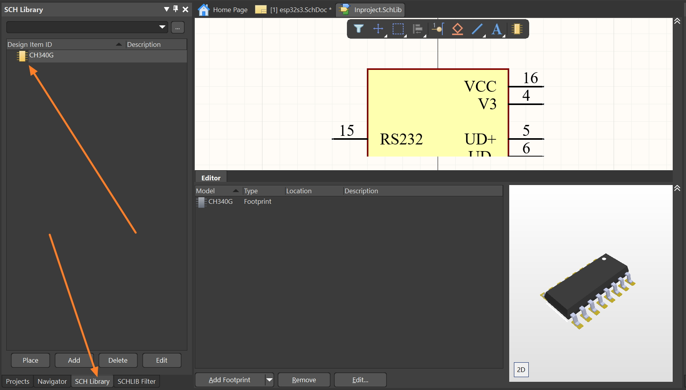
How to Make Custom ESP32 Board in Altium Designer | Full Tutorial
His Style is to Create
1. New Project
2. New Schematic Library
3. New PCB Library
Save the project files -
Then find the ESP32-S3 part name from digikey.
Find component by part number as below from panel -
Open ESP32-S3 Datasheet. Go to the pins description page -
Copy the pins descriptions to a vs code text file. Align each pin description in each line.
Remove all spaces and replace all commas with "/" . There should be 41 lines. Copy all.
Go to Altium Tools-> Symbol Wizrd . Paste the the pins descriptions as below and make the pins passive -
Place The Symbol -
Keyboard Shortcut For Manipulating Components, Pins
There is way to filter selection at top right corner.
Click Nowhere on the screen to unselect all components. Then in the property window show this:
Type
U? at the designator box. Add a new parameter "LCSC PART NUMBER" in this list as below:
Why it is important to create a part symbol with digikey parameters ?
Also search that part number in LCSC and make a parameter as LCSC part number in part symbol property as
shown above. Observe that it is only possible to import a part parameters from
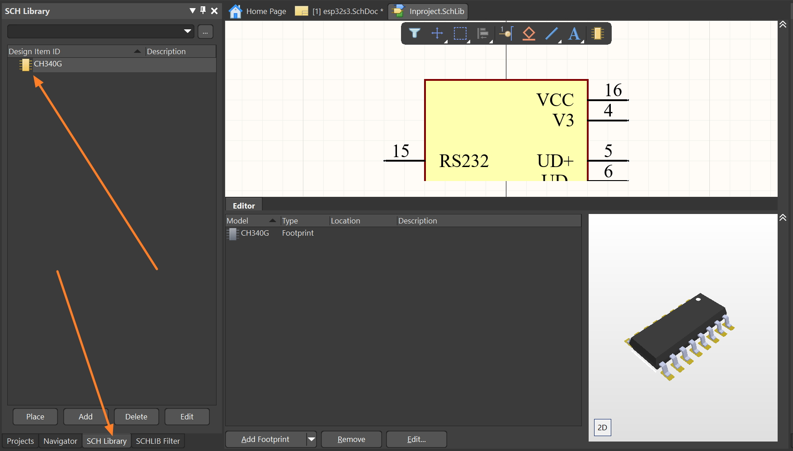
Download and unzip libraries from Digikey.
File -> Run Script -> (Run .PrjSrc from downloaded folder) .
Select The scrupt named with "Form" (UL_Form.pas)
Again select the txt file that came in the folder.
It should import the Libraries.
Select The scrupt named with "Form" (UL_Form.pas)
Again select the txt file that came in the folder.
It should import the Libraries.
Update Schematic From Library Editor
After making any mods in the SCH Library update the schematic is needed. On the left side "SCH Library" Panel there should be list of symbols. Right Click on the Modified Symbol and update schematic from Library.
Measurments between objects or points
In PCB Editor :
Report -> Measure Selected Object -> Select Track -> Press Tab -> Measure Selected Objects Pres Ctrl to temporarily disable Grid Snapping Panels -> View Configuration -> View Option -> Hide Room Press Key 'G' on keyboard to Set Grid dimension Choose a part like a button or tactile switch from DigiKey matches LCSC
In the video it uses a push button / tactile switch from C&K Manufacturer -> SMD -> 4.50mm x 4.50 mm outline ... I copy the front part of the Manufacturer Part Number and Paste it to LCSC search. It found the parts.
USB-C Connector Molex Part 2171790001
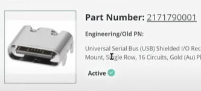 I choose an USB-C connector from LCSC as below. This is 16 Pin USB-C receptor
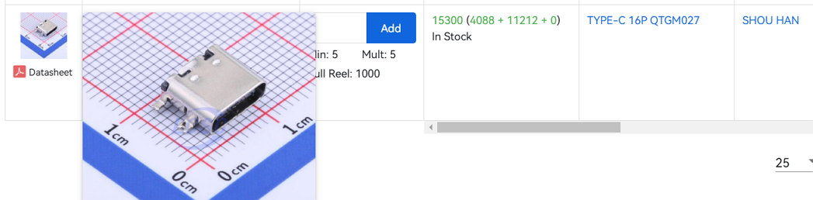
which is similar to digikey part as
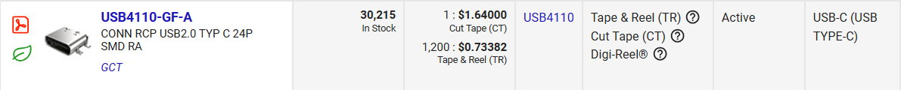
From LCSC datasheet:
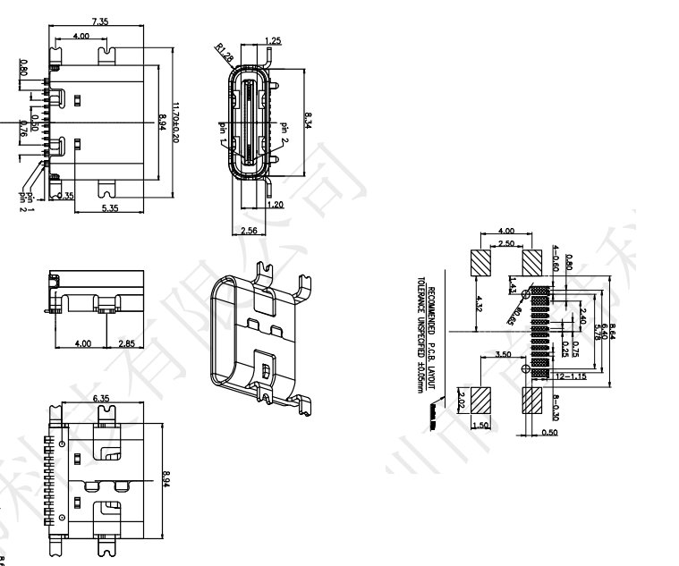
USB-C / USB Power Line Capacitor Limitation
At This Point of the
video it shows how to check USB Power Line Capacitor Limits.
It's going to use FT231XQ for USB Serial Bridge.
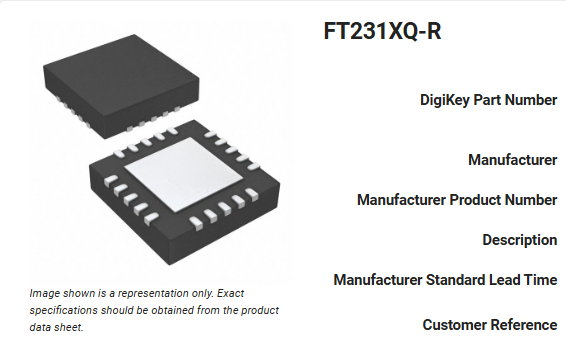
But I am planning to use CH340G, I am trying to make the board hand solderable.
We need the following signals:
Rest pins will be unconnected.
Differential Pair Class
Assign Differential Pair Symbol on track. From
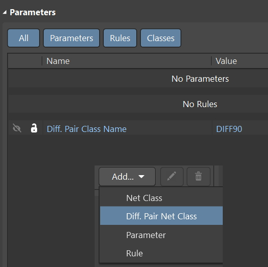
Differential Pair Signal Label names need suffix _P and _N .
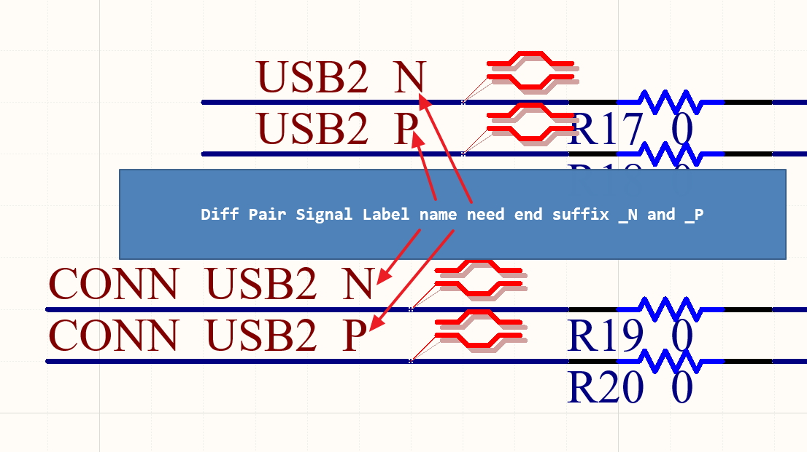
Annotate Schematic
Create Multiple Part Under Single Component in Schematic
Open or expand the SchLib file. 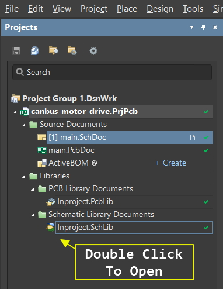
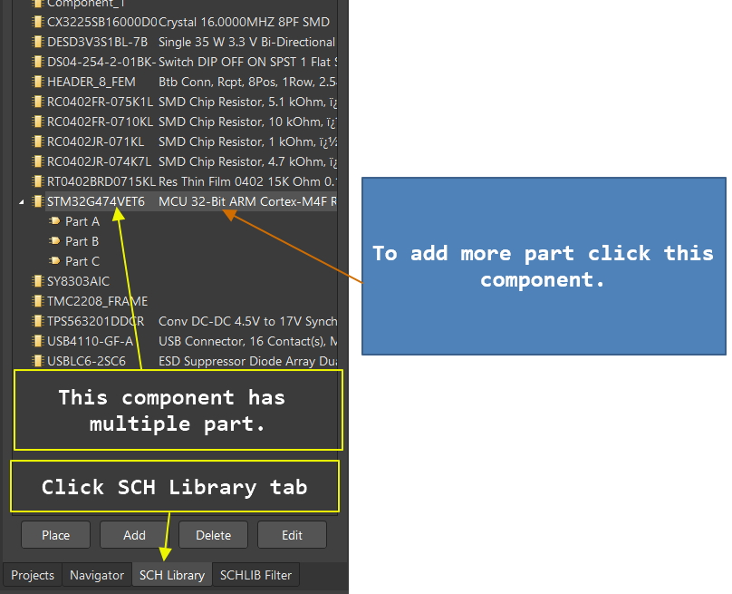
Select the package / Component where to add sub part.
Add part button is on the design window :
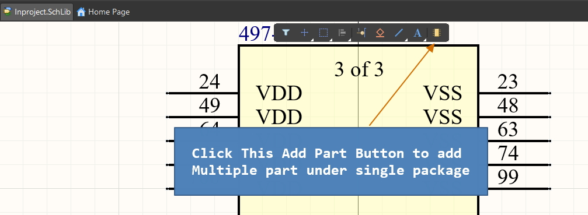
Select Component from Component Panel During Schematic Drawing
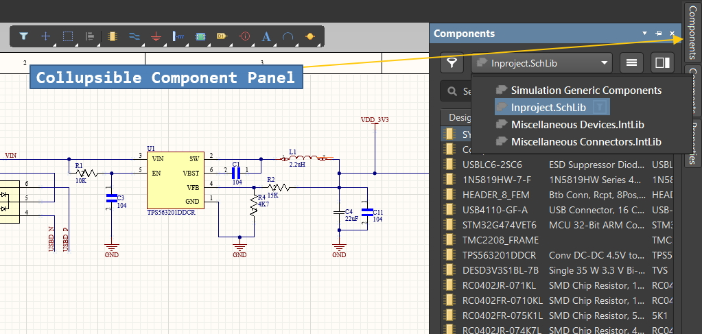 Cross Select Mode Enable
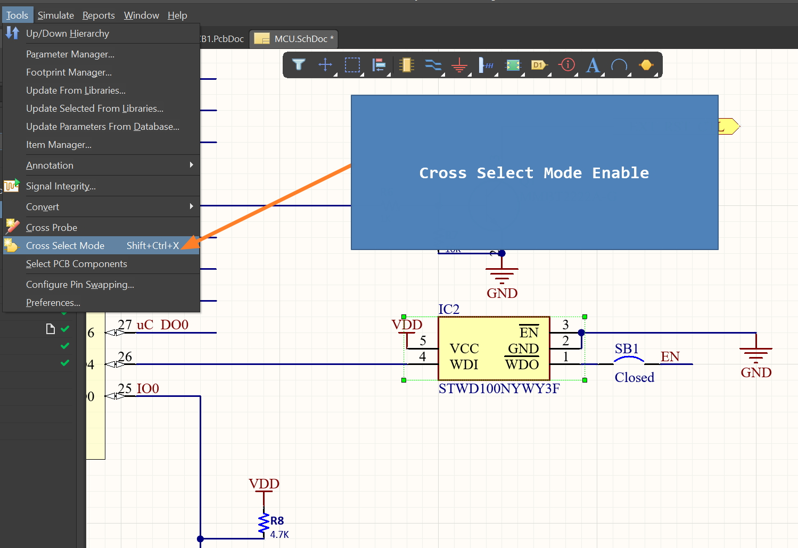 Change Board Shape Dimension Outline
layout-guide-changing-board-sizes-altium-designer 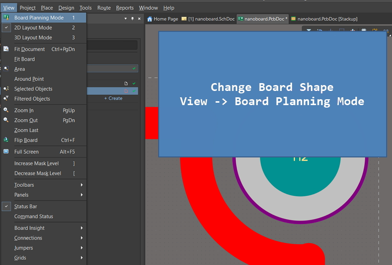
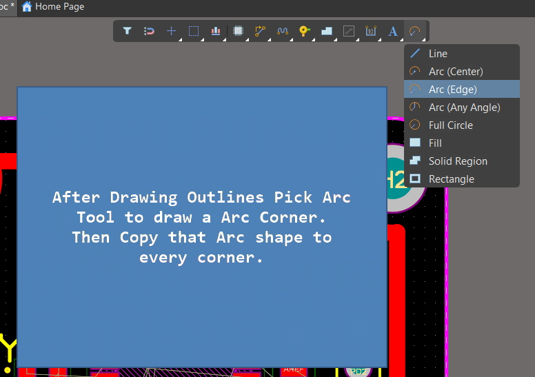
After drawing the Arcs, select the Arcs,